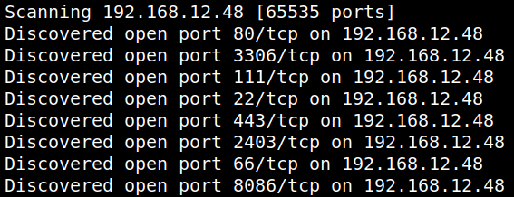
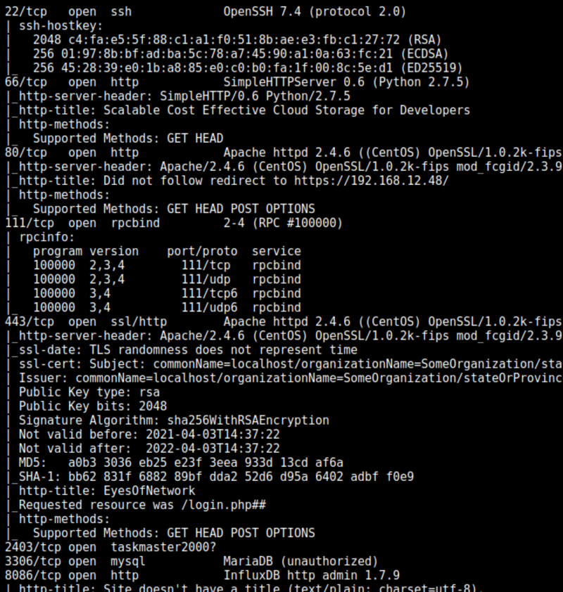

2. Finding Services and Ports
1. Run nmap.
$sudo nmap -v -sS -p- -A -T4 192.168.12.48
Output:


Open ports: 22, 66, 80, 111, 443, 3306, 8086.
It seems ther's an “
EyesOfNetwork” application. It's is a global supervision solution for the hardware status of equipment, operating systems, standard applications, business applications and performance.On port 66 there's “
SimpleHttpServer 0.6”.